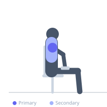

Exercise guide / Seated Dumbbell Lateral Raise
Seated Dumbbell Lateral Raise
The seated lateral raise is performed on a flat bench, eliminating any lower body momentum and forcing the medial deltoid to generate force without the assistance of a small body lean or leg drive. By removing these momentum contributors, the seated version isolates the lateral head of the deltoid more effectively than the standing lateral raise for many individuals. The strict position also makes it easier to control tempo and focus on the mind-muscle connection.
Primary muscles
deltoid lateral
Secondary muscles
deltoid anterior
trapezius upper
Stabilizers
infraspinatus
Equipment
Dumbbell (Fixed)
Flat Bench


Starting position
- Sit upright on a flat bench. Hold a dumbbell in each hand at the sides, arms hanging down with a slight bend in the elbows. Palms face the thighs.
Setup
- Because momentum is eliminated, use lighter dumbbells than for standing lateral raises initially.
Steps
- Step 1: Sit tall, dumbbells at sides, slight elbow bend.
- Step 2: Raise both dumbbells simultaneously out to the sides in an arc.
- Step 3: Raise until arms are parallel to the floor (or slightly above).
- Step 4: Pause briefly at the top.
- Step 5: Lower slowly under full control to the starting position.
Coaching cues
- Pour from a pitcher at the top
- Lead with the elbows, not the hands
- No body movement — just arms
Breathing
- Exhale as you raise, inhale as you lower.
Range of motion
- Dumbbells start at thigh level, raise to shoulder height.
Tempo
- 2-1-3-0
Common mistakes
- Using momentum — rocking the torso or bouncing the dumbbells
- Raising the dumbbells in front rather than directly to the side
- Shrugging the traps — keep the neck long
Safety
- Keep the neck relaxed to avoid trap compensation
Training
- hypertrophy: 12–20 reps
- hypertrophy: 3–4 sets
- Rest: {'hypertrophy': 60}